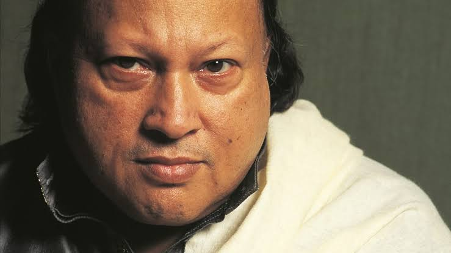

Kali Kali Zulfon Ke Phande Nah Dalo
By: Nusrat Fateh Ali Khan

-
Date of Birth: 13 October 1948
-
Ustad Nusrat Fateh Ali Khan PP (Punjabi: نصرت فتح علی خان, born Pervez Fateh Ali Khan; 13 October 1948 – 16 August 1997), also known by his initials NFAK, was a Pakistani singer, songwriter, and music director. He was primarily a singer of qawwali, a form of Sufi devotional music. Often referred to as the "Shahenshah-e-Qawwali" (the King of Qawwali), he is considered by The New York Times as the greatest qawwali singer of his generation and as the fourth greatest singer of all time by LA Weekly in 2016. He was known for his vocal abilities and could perform at a high level of intensity for several hours. Khan is widely credited with introducing Qawwali music to international audiences. He was also a master of Hindustani classical music.
-
More Information:
His Wikipedia